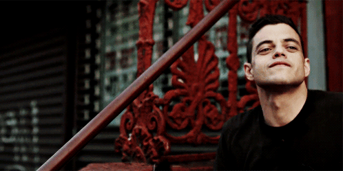

obrigado_por_visitar.exe
// SYSTEM LOG: END_OF_TRANSMISSION
VALEU POR EXPLORAR NOSSO SITE! :D
Esse site foi parte da atividade "Batalha de páginas" da matéria de Desenvolvimento Web Front-End do professor Wanderson. Agradecemos por ter dado um pouco do seu tempo visitando a nossa página temática da famosa série "MR. Robot".

"bye bye."